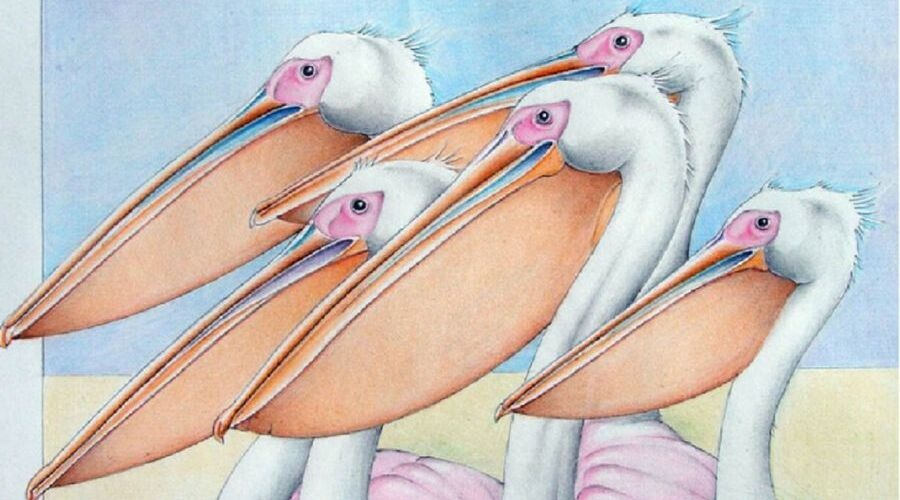

Sorprendente: científicos argentinos encuentran restos fósiles del pelícano más austral del mundo
Se encontraban ocultos en los sedimentos marinos de la Formación Paraná, en las inmediaciones de la ciudad de Victoria, Entre Ríos. ¿Qué encontraron y de qué antigüedad datan?
En lo que es uno de los hallazgos paleontológicos internacionales más importantes de los últimos años, un equipo de científicos argentinos encontró los restos fósiles de un milenario pelícano que, según afirmaron, es el primero descubierto en la Argentina y el más austral del mundo jamás registrado hasta el momento.
Según explicaron los investigadores, entre los restos fósiles de esta nueve especie de pelícano a la que bautizaron “Pelecanus paranensis” y que fueron encontrados en los sedimentos marinos de la Formación Paraná, más precisamente en las inmediaciones de la ciudad de Victoria, Entre Ríos, había una cintura pélvica que estaba casi completa y en perfecto estado de conservación, lo que les llamó poderosamente la atención, ya que, de acuerdo a sus cálculos, tiene una antigüedad que oscila entre los 7 y los 10.000.000 de años.
"Las características del ejemplar permiten ubicarlo como cercano a los representantes de pelícanos del Nuevo Mundo, lo que supone una ruta transatlántica en la dispersión de estas aves desde el Viejo Mundo (Eurasia/África) hacia América”, comentó el investigador del Conicet y primer autor del trabajo, Jorge Noriega, en diálogo con el programa “Primera Mañana” que se emite por LT9 AM 1150 de Santa Fe.
"En ese contexto encontrar un pelícano, si bien como la noticia lo marca, el primero encontrado en Argentina, no es una cosa rara, junto con esos pelícanos nosotros ya hemos estudiado ballenas, focas, vacas marinas, tiburones y peces. Hay una infinidad de fauna de vertebrados asociados a ese mar, que se llamó Mar Paranaense, que, de a poco, se va reconstruyendo", agregó el especialista.
Por su parte, Diego Brandoni, investigador del Conictet y coautor del hallazgo, explicó que el estudio del Pelecanus paranensis se encuentra enmarcado en un proyecto financiado por el Conicet cuyo objetivo central es poder determinar la diversidad de vertebrados fósiles del Neógeno de la Región Mesopotámica. “El registro de Pelecanus paranensis se suma a una serie de nuevos hallazgos entre los que se destacan nuevos ejemplares de cocodrilos, anfibios y peces, los que incrementan la diversidad de vertebrados fósiles para la región”, concluyó el científico argentino.
Tanto la investigación como el informe posterior que fue publicado en la revista Journal of Vertebrate Paleontology, fueron realizados por profesionales del Conicet en el Centro de Investigación Científica y Transferencia de Tecnología a la Producción (Cicyttp, Conicet-Entre Ríos-Uader) y de la Universidad Nacional de La Plata (UNLP), junto con un científico de la Fundación de Historia Natural Félix de Azara de la Universidad Maimónides.